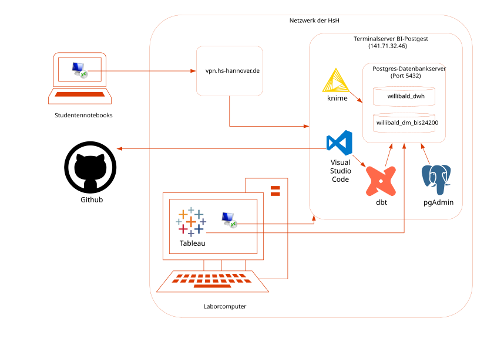
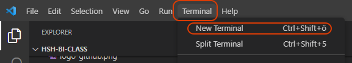
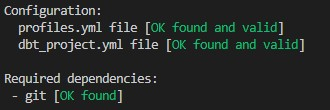
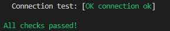
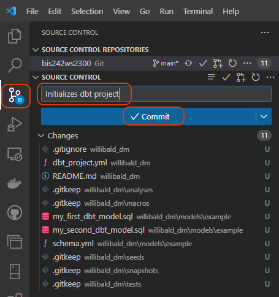
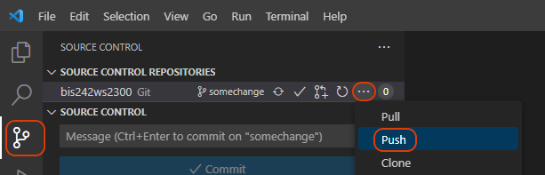
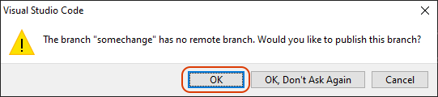

Übung Business Intelligence
Technische Grundlagen
Aufgabenstellung
- Übersicht über die Übung verschaffen
- dbt-Projekt initialisieren
- Übertragen Ihres Fortschritts zu Github
Übungsübersicht
- Aufbau / Technologie der Übungsumgebung
- Beschreibung des Übungsdatenmodells (Quelle und Core-Warehouse)
- Ablauf der Übung
Übersicht über die Übungsumgebung

Übungsdatenmodell - Quellsystem


Übungsdatenmodell - Data Vault

Ablauf der Übung
| Übungsinhalt | Technologie |
|---|---|
| Aufbau einer Datumsdimension | knime |
| Untersuchen der Datenqualität unseres Datenmodells | dbt |
| Modellieren und Beladen eines Sternschemas | dbt |
| Aufbau eines Dashboards zur Datenanalyse | PowerBI |
| Übertragung unserer Übungsumgebung in die Cloud | Azure |
| Darstellung unserer Datenanalyse mit räumlichen Daten | Tableau |
Einführung in dbt
dbt-Projekt initialisieren
Öffnen Sie Ihr, in der letzten Übung geklontes, lokales Repository mit Visual Studio Code. Öffnen Sie innerhalb der IDE ein Terminal.

Geben Sie dort folgenden Befehl ein:
dbt init
Bei der Initialisierung geben Sie als Projektnamen willibald_dm ein und wählen Postgres als Zieldatenbank aus.
profiles.yml erstellen
Die Verbindungseinstellungen eines dbt-Projekt werden in einer profiles.yml-Datei definiert. Geben Sie folgenden Befehl ins Terminal ein:
code $env:USERPROFILE\.dbt\profiles.yml
Schreiben Sie nun folgenden Inhalt in die Datei:
willibald_dm:
target: dev
outputs:
dev:
type: postgres
host: localhost
user: bis24200
password: 5hpAYvVAv7tAzm
port: 5432
dbname: willibald_dm_bis24200
schema: dm_ol
keepalives_idle: 0
connect_timeout: 10
retries: 1
In dbname, user und password bitte Ihre Zugangsdaten eintragen.
Testen der Konfiguration
Geben Sie folgende Statements ins Terminal ein:
cd willibald_dm
dbt debug
War die Ausführung erfolgreich, sehen Sie folgende Ergebnisse:


Testen von dbt run
Führen Sie bitte folgendes Statement im Terminal aus:
dbt run
Dieser Befehl erstellt die im Verzeichnis models/example/ definierten Modelle des dbt-Projekts in der Datenbank. Dort sollten anschließend zwei Objekte existieren:
- my_first_dbt_model (Tabelle)
- my_second_dbt_model (View)
Prüfen Sie diese bitte mithilfe des Tools PGAdmin.
Commit Ihrer Änderung erzeugen
dbt ist nun vollständig eingerichtet.
Um Ihren Fortschritt zu sichern, sollten Sie Ihr lokales Repository noch zu Github übertragen. Klicken Sie in Visual Studio Code links im Menü auf "Source Control". Sie sehen dann eine Liste der Änderungen innerhalb Ihres lokalen Repositorys.
Geben Sie im Message-Fenster eine kurze Änderungsbeschreibung ein. Zum Beispiel "Initializes dbt project". Klicken Sie dann auf "Commit".

Pushen Ihrer Änderungen zu Github
Der eben erzeugte Commit, muss noch an Github übertragen (gepusht) werden. Auch dies kann mithilfe von Visual Studio Code erledigt werden:

Da im Github-Repository noch kein Branch existiert, wird Visual Studio Code nachfragen, ob der lokale Branch zunächst veröffentlicht und dann gepusht werden soll. Bestätigen Sie dies.

Einstieg in Git
Um die Arbeit mit Git besser verstehen zu können, empfehlen wir eine Demo: